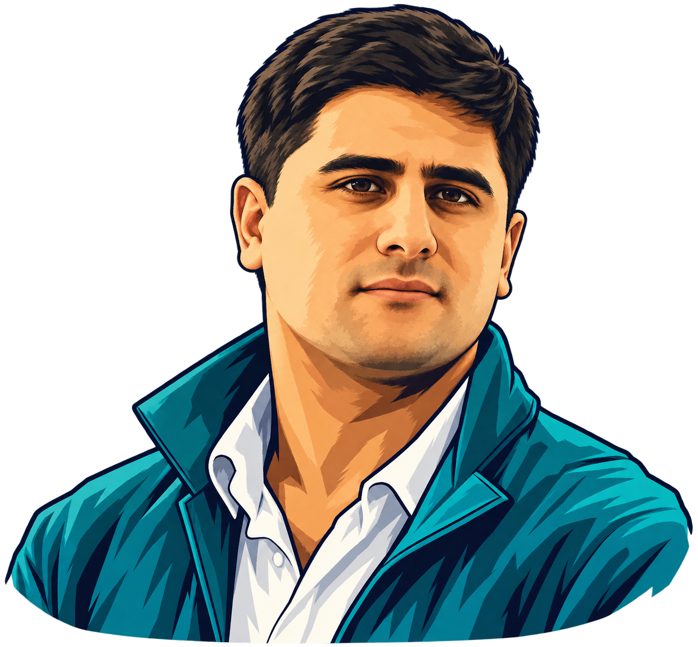
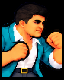
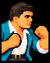
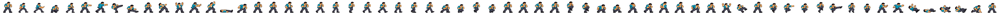
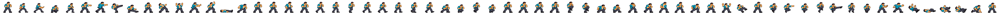
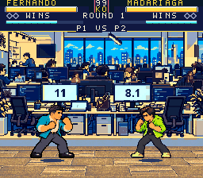
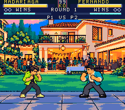

Reference, facial study and the actual native portraits.







Changes, exact prompts and preservation · Technical verification
Candidate ROM: 9ad9ca5f30a52871d7ea7efd71ce82af3d2e69e72b844db01e07bddbb63b736e · B2BB. Human likeness review pending. Production remains v0.29 until merge.